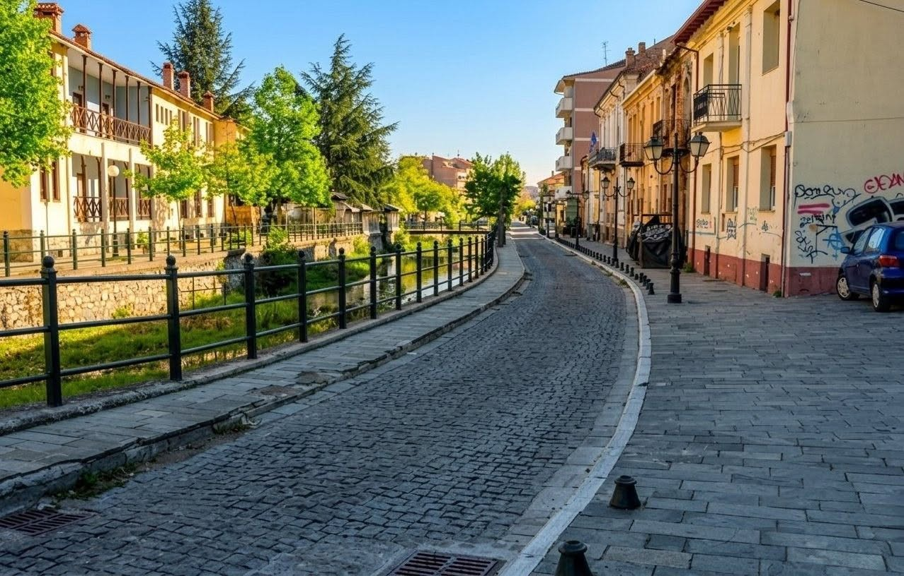
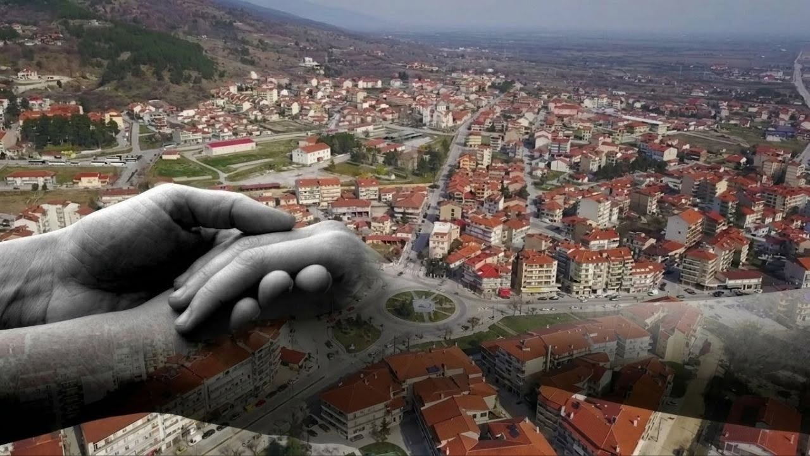
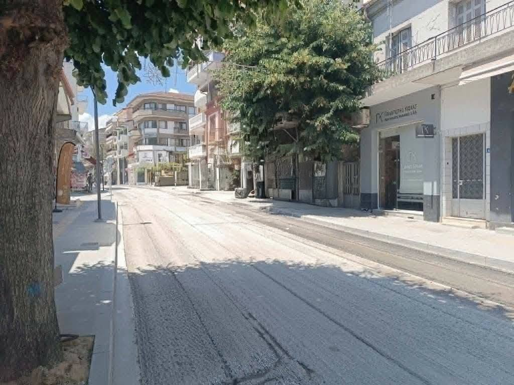

Όλα τα Άρθρα & Αναλύσεις

Πίσω από τις «πρώτες θέσεις» και την ουσία για τον τόπο μας
Πίσω από τις συζητήσεις για το ποιος δικαιούται να κάτσει πού, υπάρχει η αληθινή Π.Ε. Φλώρινας που αγωνιά. Είναι λυπηρό να βλέπουμε την πολιτική σκοπιμότητα να επισκιάζει το μέλλον του τόπου μας.
Διαβάστε το άρθρο →
Η Φλώρινα της δημιουργίας και της αισιοδοξίας
Η Φλώρινα δεν είναι μόνο οι δυσκολίες της. Είναι οι άνθρωποί της, το πείσμα τους και η ομορφιά της φύσης μας. Έχουμε έναν ζωντανό τόπο γεμάτο δυνατότητες.
Διαβάστε το άρθρο →
ΕΣΠΑ, Δίκαιη Μετάβαση και οι ανάγκες του τόπου μας
Οι συζητήσεις για το ΕΣΠΑ είναι θετικές, αρκεί τα χρήματα να πιάσουν τόπο άμεσα. Χρειάζεται συνεργασία και τεχνική τεχνογνωσία για να μετατραπούν οι πόροι σε πραγματικά έργα.
Διαβάστε το άρθρο →
Αυτόνομα ηλιακά συστήματα αντί για απλές λάμπες LED
Μέσω ΕΣΠΑ, 1.000 ηλιακά φωτιστικά εξοικονομούν 56.000€ κάθε χρόνο για τον Δήμο, με μηδέν επιβάρυνση για τους δημότες. Έργα ουσίας με καθαρούς αριθμούς.
Διαβάστε το άρθρο →
Τι μας κρατάει τελικά πίσω σε αυτόν τον τόπο;
Πολλοί νέοι ανησυχούν για το αύριο και είναι διστακτικοί να μιλήσουν. Για να πάει ο τόπος μπροστά, πρέπει να βγούμε στην πρώτη γραμμή με νέες ιδέες, συνεργασία και κοινή λογική.
Διαβάστε το άρθρο →
Όταν η κοινωνία βγαίνει μπροστά...
Ο απλός πολίτης αποκτά ξανά φωνή. Όταν οι συνδημότες μας συζητούν ανοιχτά και προτείνουν λύσεις με κοινή λογική, ο δρόμος για το καινούργιο έχει ήδη ανοίξει.
Διαβάστε το άρθρο →